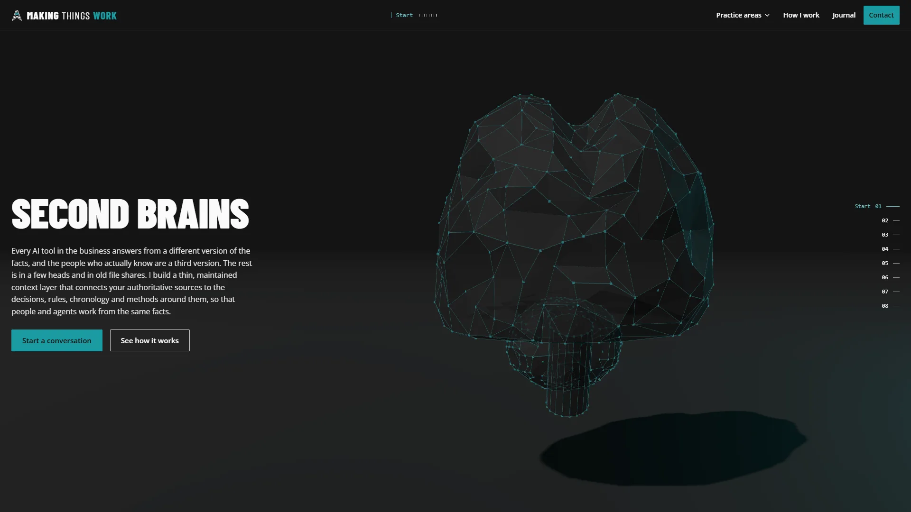

SECOND BRAINS
Every AI tool in the business answers from a different version of the facts, and the people who actually know are a third version. The rest is in a few heads and in old file shares. I build a thin, maintained context layer that connects your authoritative sources to the decisions, rules, chronology and methods around them, so that people and agents work from the same facts.
What is actually inside it
Five kinds of thing, kept separate and kept current: the sources that are authoritative, the decisions already made, the rules that apply, the order events happened in, and the methods worth repeating.
A task wakes only what it needs
Preparing the project status report needs the current milestones, one decision record and the agreed report format. Nothing else is loaded, so the answer is narrower, cheaper and far easier to check.
Context you can trace
The context attached to the task is readable, and each part carries the source it came from and the person who owns it. An answer nobody can trace is an answer nobody will act on.
The same structure, a different job
A research effort, a DevOps environment and a case chronology each bring different parts of the same structure forward. The shape of a second brain does not change with the subject.
When a source moves
A source that has changed or gone missing marks everything depending on it for review, and names the outputs affected. Stale context is worse than missing context, because it still looks like an answer.
One route to the work
A project lead asks for the weekly report. The routing layer uses that project's permitted context and the organization's report format, gathers the updates, prepares a draft and stops at a review step with a person's name on it.
Different work, same rules
A case chronology links events to the evidence supplied and keeps disputed entries visible instead of resolving them quietly. A research task runs to a bounded objective, with permitted tools, a budget and the conditions under which it stops.